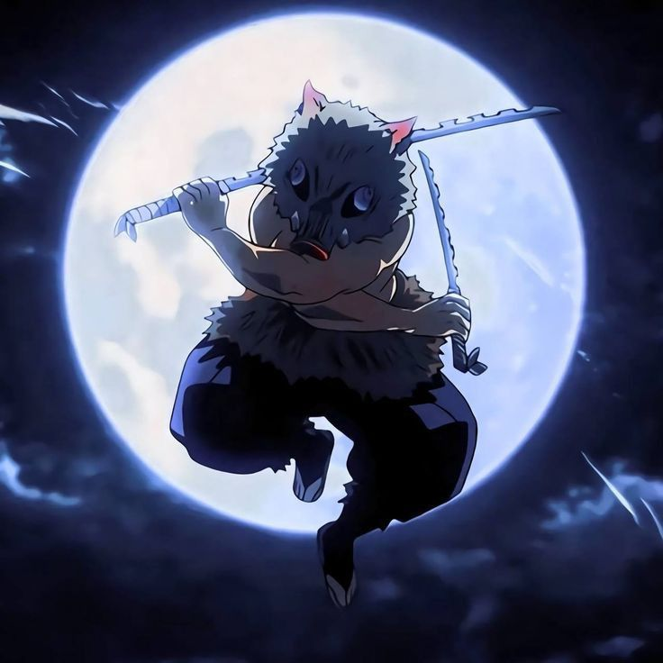
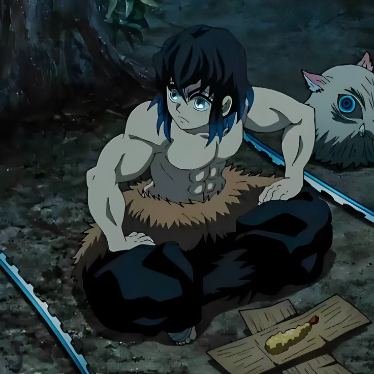
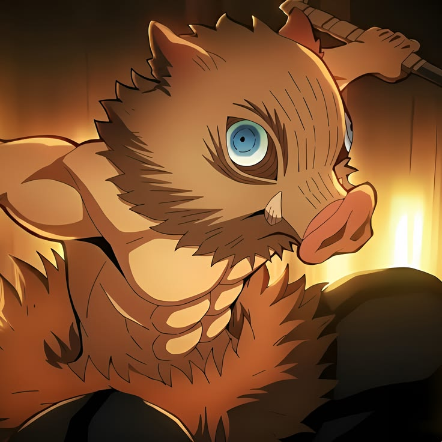
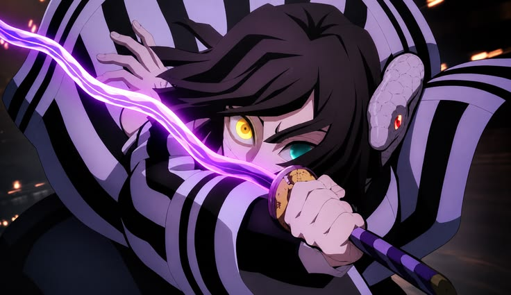
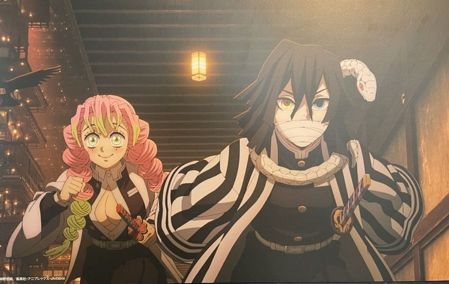
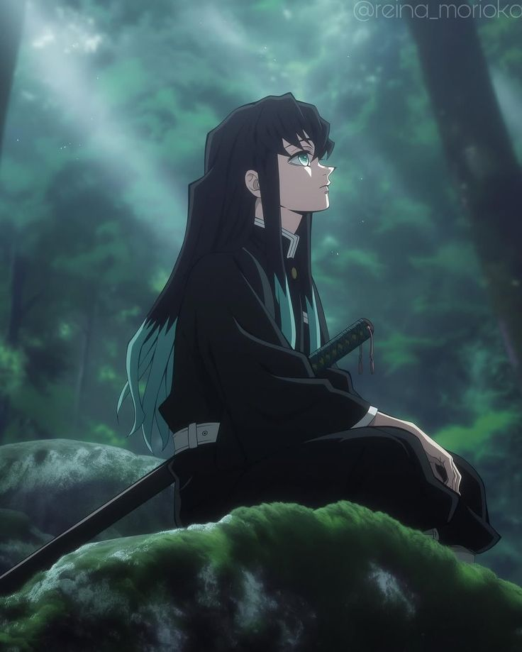

Género: Acción y Supervivencia Postapocalíptica.
Público Objetivo: Jugadores mayores de 12 años interesados en gestión de recursos, exploración táctica y combate reactivo.
Objetivo: Videojuego interactivo que fomente la educación ambiental mediante dinámicas de juego enfocadas en la recuperación y restauración de los ecosistemas mediante combates RPG/daugeons.
1. Mantén vigilado tu medidor de radiación en las zonas rojas.
2. Recolecta componentes biológicos para sintetizar combustible de purificación.
3. Regresa al refugio antes de que caiga la tormenta ácida.
| Acción | Control |
|---|---|
| Mover a Kaell | Joystick Virtual Izquierdo |
| Ataque / Disparo | Botón A (Derecha) |
| Semilla del Edén | Botón B (Interacción) |
La Tercera Guerra Mundial dejó un planeta sumergido en radiación, desechos tóxicos y ecosistemas al borde de la extinción.
Engendradas por la lluvia radiactiva y experimentos militares fuera de control, acechan a los últimos refugios humanos.
Tras perder su hogar en un brutal ataque, Kaell se une a la resistencia para rescatar el futuro de la humanidad.
Una tecnología avanzada capaz de purificar la radiación y restaurar la vida biológica en las zonas muertas.






Versión: Build 1.0.0 (Beta Académica)
Plataforma: Android (APK)
Tamaño: 145 MB
Descargar APK Directo.apk desde el botón superior.Sprint 1: Prototipado, concepto visual y lógica básica de movimiento.
Sprint 2: Programación de mecánicas de mutantes y sistema de ataque.
Sprint 3: Implementación de las Semillas del Edén, balance y corrección de bugs.
Motor / Entorno: Motor de juego compatible móvil / Entorno Web.
Lenguajes: C# / JavaScript / HTML5.
Herramientas: Visual Studio Code, Git, Photoshop / Canva.
Se utilizaron herramientas de Inteligencia Artificial como asistentes de apoyo técnico para la estructuración y depuración de código web, así como para la generación de borradores de arte conceptual inicial y elementos de ambientación.
Efectos de sonido y texturas ambientales obtenidos de librerías de uso libre (Freesound / OpenGameArt bajo licencia CC0).
El código fuente y la documentación académica se distribuyen bajo la licencia MIT. Los activos de marca y logotipos pertenecen al equipo del proyecto.
Toxic Horizon no recopila, almacena ni transmite ningún tipo de dato personal, ubicación geográfica ni información sensible del usuario.
Clasificación Sugerida: Teen (T / +13). Contiene escenas de combate con monstruos, atmósfera de tensión y efectos visuales de radiación.
Este proyecto tiene fines estrictamente académicos. Se entrega "tal cual" (as-is), sin garantías explícitas de compatibilidad en todos los dispositivos comerciales.
Para reportes de fallos técnicos, dudas sobre la entrega o consultas académicas, contáctanos a través del repositorio oficial de GitHub del proyecto.